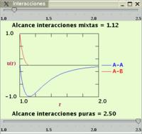
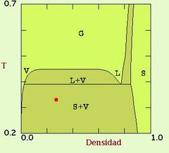

EXPERIMENTO
1: Fuerzas de atracción y fases condensadas
- Condiciones Iniciales
- Seleccione en el Panel Principal una temperatura alta ( T >0.60) y una densidad moderada (0.30)
- Elija en el menú Tipo de Simulación la opción Sustancia Pura
- Visualice la forma del potencial de interacción utilizando la opción Interacciones disponible dentro del menú Control del Sistema
- Fije, utilizando la regleta, la distancia de alcance al valor 2.5
- Observe que la interacción entre partículas
presenta un mínimo de energía

- Simulación de la fase gas
- Comience la simulación en las condiciones anteriores pulsando la tecla Inicio
- Observe el diagrama de fases del sistema (Rc=2.5)
- Active en el menú Sistema la opción Función de distribución

- Efecto del potencial atractivo:
- Las partículas tienden a formar agregados
- La función de distribución, g(r), presenta un máximo para una distancia próxima a la del mínimo del potencial de interacción
- Condensación: Equilibrio líquido-vapor
- Disminuya la temperatura del sistema (manteniendo la densidad
constante) hasta un punto perteneciente a la zona "L+V" en el diagrama
de fases (T~ 0.40)
- Observe la formación de dos 'fases' bien definidas en
el sistema: una con alta densidad de partículas (líquido)
y otra con baja densidad (vapor)

- Disminuya la temperatura del sistema (manteniendo la densidad
constante) hasta un punto perteneciente a la zona "L+V" en el diagrama
de fases (T~ 0.40)
- Equilibrio sólido-vapor
-
Disminuya la temperatura hasta un punto en la zona "S+V" (por ejemplo T
~ 0.30). Observe los siguientes efectos:
- Compactación y ordenación "cristalina" de la
fase de alta densidad
- Disminución del número de partículas
(y de la densidad) en la fase vapor
- Eche un vistazo a la característica estructura de
los picos de la función g(r) para los sólidos cristalinos
NOTA: Puede resultar útil detener la simulación mediante la tecla PAUSA del Panel de Control y activar la opción Pinta enlaces del menú Control del Sistema para apreciar mejor la ordenación de las partículas.
- Efecto de la atracción entre partículas
- Pulse la tecla Pausa del Panel de Control si la simulación está activa y modifique el potencial de interacción (opción Interacciones en el menú Sistema) hasta eliminar el "pozo" atractivo de la interacción (alcance: Rc =1.12)
- Pulse la tecla Sigue en el Panel de Control
- Observe la aparición de fase gaseosa homogénea
- Detenga nuevamente la aplicación
- Restablezca las atracciones (alcance Rc=2.50)
- Pulse Sigue y observe la reaparición del equilibrio sólido-gas
- Compactación y ordenación "cristalina" de la
fase de alta densidad